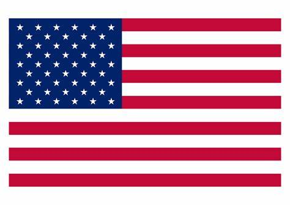

1972
Born in London, UK
Hammersmith
Attended Gunnersbury Catholic School for Boys
Hammersmith
Attended Gunnersbury Catholic School for Boys
Computer Science
London, UK
Cray Systems
Daichi-Kangyo bank

Seattle, WA
Met and married Leanne Olsen
Bought a house in Sammamish 2000
Became a citizen 2003
Redmond on-site
Redmond on-site
 Subly (startup)
Subly (startup)
Remote
Employee #3